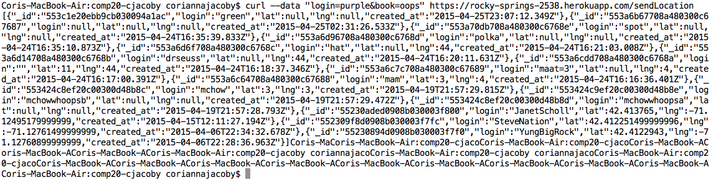

1. XSS
- POST - /sendLocation
- High Severity - with a scripted attack the hacker can direct the webpage to do anything it wants, from redirecting to a malicious site or presenting false information.
- Simply experimenting with possible inputs for logins and previous examples of XSS helped me find this issue.
- This threat can be mitigated by converting potentially worrisome characters to their HTML equivalents. One way to do this is use the javaScript escape() function.
2. Unexpected Input Type
- POST - /sendLocation
- Low Severity - while it is a large security breach to take in input of a different type than expected as then it might not be sanitized correctly, the issue is partially dealth with by using parseNumber() as when latitude and longitude are not numbers they are simple stored as NaN instead of their actual value.
- I found this issue using black box testing with random inputs.
- This issue can easily be fixed by checking the value of input for NaN or other unacceptable values before storing the values in the database. If that is the case the code should not store the values and instead return an error message instead.


3. No Field Checks
- POST - /sendLocation
- Moderate Severity - this opens the website up to taking any sort of input, from missing or additional fields to even input that is not even a string or a query at all. Bash does check for '(' so inserting javaScript of nodejs code seems to be out of the question, but that is an issue a skilled hacker would most likely be able to get around. Regardless, it is a gaping hole that the code takes in any type of input, even though it only inserts NaN and null into the database in response.
- I found this issue using black box testing and simply expanding on the problems I had previously found.
- Fortunately, checking input type, the fix for issue 2, should additionally solve this issue although it will not test for taking in extra fields. However as the extra fields would not be stored, that is a minor issue. 


4.Query Crashes Server
- GET - /location.json
- High Severity - any query to location.json returns {} and then crashes the server, which is a huge vulnerability. If a malicious entity knew how to crash a site whenever they wished, it would be a huge problem for the site as it would be inaccessible, effectively ruling it useless.
- I found this issue trying to check all functionality of the site. Given any query crashes the server, it was simply enough to test it using the black-box method.
- Unfortunately I could not find a clear fix for this problem. I believe it has to do with accessing the database in the matter it does, but more testing would require a more rigorous testing process. Additionally, I believe this has to do with the database allowing illegitimate inputs in the database, such as null or nothing as the login which makes the find() command crash.